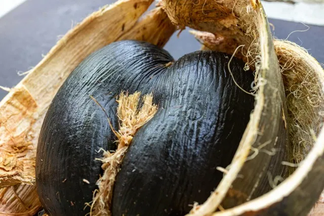
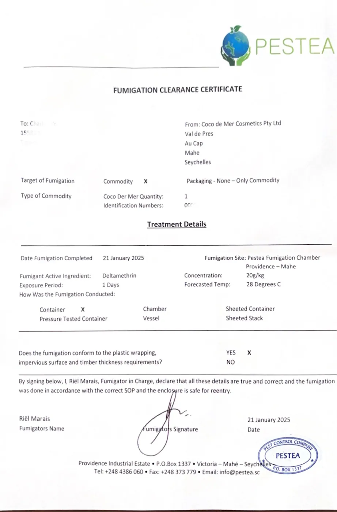
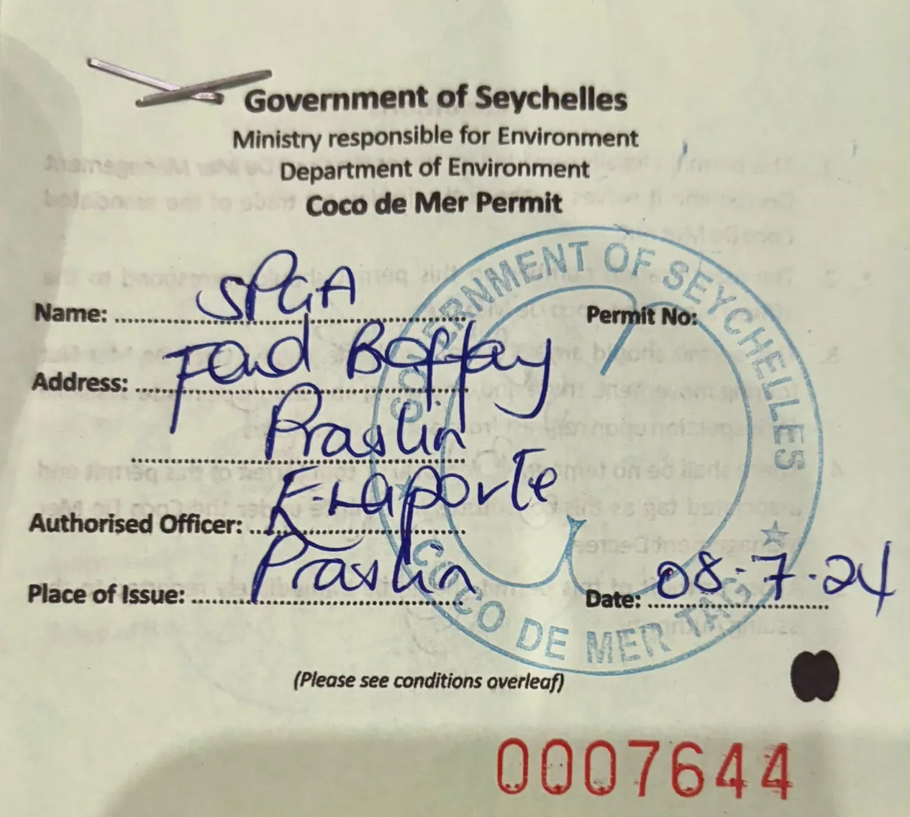
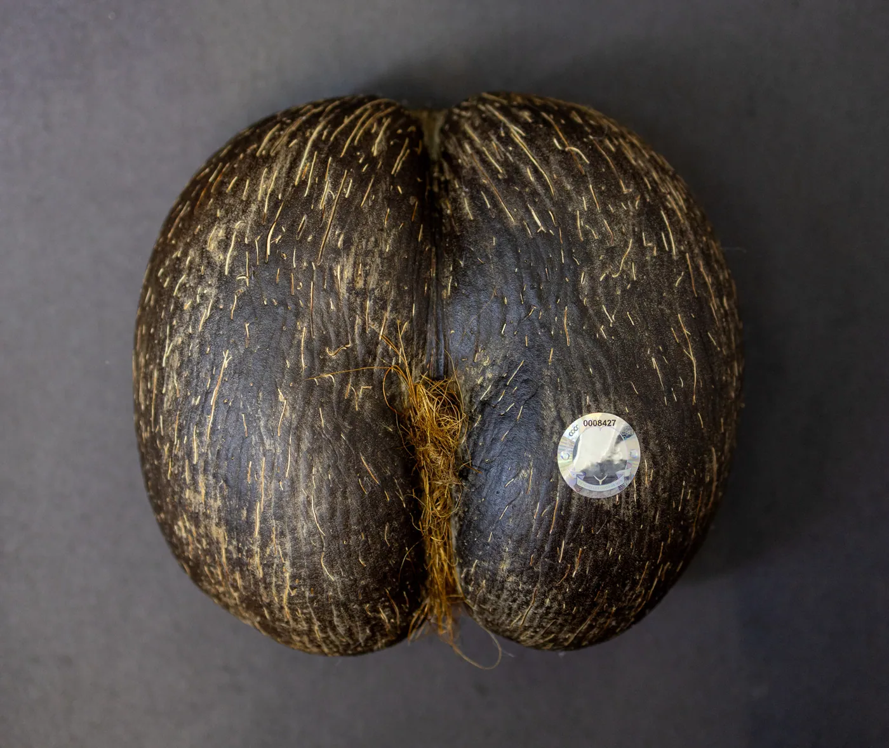

The Importance of Proper Documentation When Importing Coco de Mer

The Coco de Mer, the iconic and rare nut from Seychelles, is highly sought after for its unique appearance, ecological value, and cultural significance. However, as a protected species under the Convention on International Trade in Endangered Species of Wild Fauna and Flora (CITES), strict regulations govern its export and import. Ensuring compliance with these regulations is critical to prevent legal complications, support conservation efforts, and safeguard international biodiversity.
When importing Coco de Mer, having the correct documentation is not just a bureaucratic requirement—it is a legal obligation. Below is a breakdown of the essential documents and their significance:
1. Fumigation Certificate
The Coco de Mer is a large nut with a hard shell, making it an ideal hiding place for insects, especially wood-boring insects. To prevent the accidental introduction of pests to new ecosystems, the supplier must provide a fumigation certificate. This document certifies that the nut has been treated to eliminate any insects or larvae, ensuring it is pest-free.

Fumigation is particularly important—and mandatory—in countries with stringent biosecurity laws, including Australia, New Zealand, Canada, the United States, France, Réunion, and all French overseas territories and states. These nations enforce fumigation requirements to prevent the introduction of invasive species that could harm their native ecosystems. Importers who fail to meet these requirements risk fines, confiscation, or destruction of the Coco de Mer upon arrival.
2. Phytosanitary Certificate
Issued by the Seychelles government, the phytosanitary certificate verifies that the Coco de Mer meets international plant health standards. This document ensures that the nut is free from harmful plant pathogens or pests that could potentially harm local flora in the importing country. It serves as a critical safeguard to protect global agricultural and natural ecosystems.
3. Identification Tag

Every legally obtained Coco de Mer must come with an identification tag, often referred to as its "passport." This small green paper is issued by the Seychelles government and serves as proof of the nut's legal origin. Tags are provided to private individuals with registered Coco de Mer trees or to parastatals like the Seychelles Islands Foundation or the Seychelles National Parks and Gardens Authority. The tag includes specific details about the nut, including its source, ensuring traceability and compliance with CITES regulations.
The Process of Exporting Coco de Mer
To ensure compliance with international regulations, all Coco de Mer exported from Seychelles are empty, meaning the kernel has been removed, and the inside of the nut cleaned. This ensures that the nut is no longer viable as a seed, addressing concerns about the unauthorized spread of this rare species. Once the kernel is removed, the two halves of the nut are carefully reglued by expert artisans at the Coco de Mer Collection, restoring its iconic shape and appearance while maintaining its legal status for export.
Consequences of Missing Documentation
Importing a Coco de Mer without the required documentation can lead to serious consequences:
- Customs Fines: Many countries, including France, Australia, New Zealand, Canada, and the USA, impose heavy fines for attempting to import Coco de Mer without the proper certificates.
- Seizure or Destruction: Without proper documentation, customs officials may seize the Coco de Mer, or it may be destroyed as it is classified as a seed. Even though exported Coco de Mer are non-viable, regulations still require proof of proper processing and certification to avoid penalties.
- Legal Action: Depending on the importing country, individuals or businesses attempting to bypass these regulations could face legal repercussions, including penalties under environmental protection laws.
Why Compliance Matters
The documentation process plays a vital role in preserving the Coco de Mer’s status as a rare and protected species. Non-compliance with these requirements can have far-reaching consequences:
- Environmental Impact: Introducing unauthorized or untreated plant material to a new environment could harm local ecosystems.
- Conservation: Adhering to the rules supports Seychelles’ ongoing efforts to protect the Coco de Mer, which grows only on the islands of Praslin and Curieuse.
- Reputation: Businesses and individuals dealing in illegally imported or undocumented Coco de Mer risk reputational harm, which could jeopardize future trade opportunities.
Final Thoughts
If you are planning to import Coco de Mer from Seychelles, always ensure that your supplier provides a fumigation certificate, a phytosanitary certificate, and the official identification tag. Remember that fumigation is mandatory in countries like France, Réunion, Australia, New Zealand, Canada, the USA, and many others with strict biosecurity laws.

Additionally, Coco de Mer imported without the proper certificates may be subject to heavy fines, confiscation, or destruction as a seed—even though it is no longer viable due to expert processing in Seychelles. These documents not only ensure compliance with international regulations but also contribute to the preservation of one of the world's most unique natural treasures. By following the proper procedures, you can enjoy the beauty and uniqueness of the Coco de Mer while supporting Seychelles' efforts to protect its biodiversity.